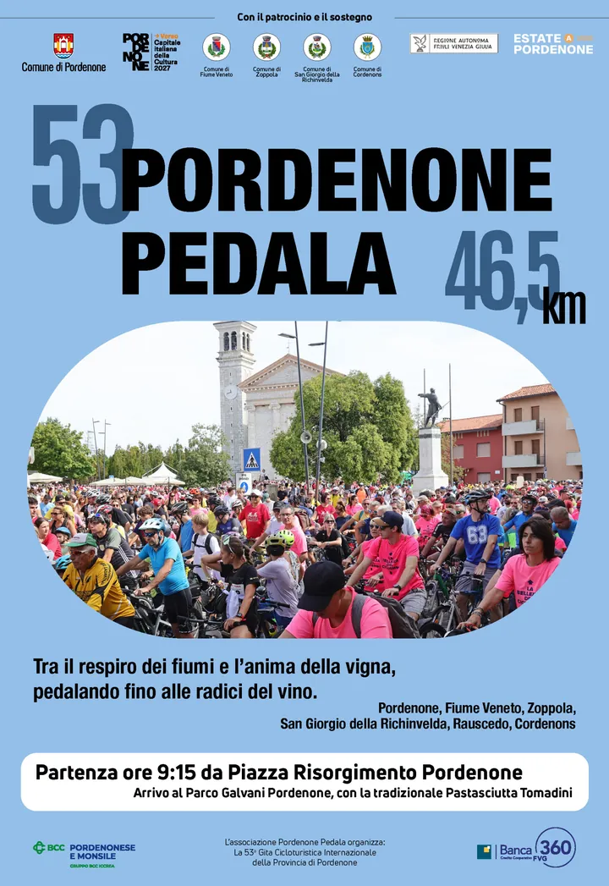

Friuli
dom 6 set · dalle 09:15
53a Pordenone Pedala
Edizione 2026 della pedalata collettiva cittadina.
 Indicazioni
Indicazioni
- Costi e prenotazioni
- €10 · bambini fino a 10 anni €5 · Iscrizione dal 24 agosto al 6 settembre
- Programma
- Percorso e orari confermati. Partenza alle 09:15 e arrivo previsto alle 12:10; percorso di 46,5 km.
- In caso di maltempo
- Nessuna indicazione specifica pubblicata.
- Note
- Iscrizioni presso la casetta in Piazzetta Cavour.
L’EVENTO
Descrizione completa
La storica gita cicloturistica non competitiva percorre 46,5 chilometri tra Pordenone, Fiume Veneto, Zoppola, San Giorgio della Richinvelda, Rauscedo e Cordenons. La partenza è da Piazzale Risorgimento e l’arrivo al Parco Galvani.
Iscrizioni presso la casetta in Piazzetta Cavour. Manifestazione non competitiva aperta a partecipanti di tutte le età.
IL PROGRAMMA
Programma e orari
Appuntamenti raccolti dalle fonti elencate. Dove manca un orario, non è ancora disponibile in questa scheda.
Domenica 6 settembre
- 09:15 · Partenza da Piazzale Risorgimento
- Percorso di 46,5 km attraverso sei comuni
- 12:10 circa · Arrivo al Parco Galvani di Cordenons
- Pastasciutta per i partecipanti
INFORMAZIONI UTILI
Prima di partire
- Iscrizioni presso la casetta in Piazzetta Cavour.
- Manifestazione non competitiva aperta a partecipanti di tutte le età.
ORGANIZZAZIONE